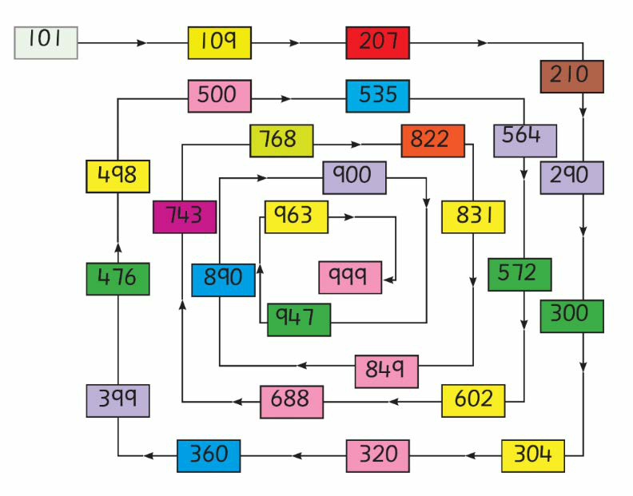

Activity 3
Read the following numbers in the direction of the arrows. Answer the questions that follow.

Questions
1.
Read loudly the ones of the first ten numbers.
2.
Read loudly the hundreds of five numbers before 999.
3.
Read loudly all the numbers ending with 0 ones.
4.
Read loudly all the numbers ending with 0 tens.